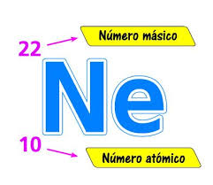

Encuesta sobre Iones, Moléculas y Átomos

1. ¿Qué es un átomo?
a) Un grupo de moléculas
b) La unidad básica de la materia
c) Un tipo de ion
d) Un grupo de protones
2. ¿Cómo se forma un ion positivo?
a) Ganando electrones
b) Perdido protones
c) Perdido electrones
d) Ganando protones
3. ¿Qué es una molécula?
a) Un conjunto de átomos unidos por enlaces químicos
b) Un tipo de ion
c) Un solo átomo
d) Un núcleo de átomo
4. ¿Qué tipo de enlace se forma cuando los átomos comparten electrones?
a) Enlace iónico
b) Enlace covalente
c) Enlace metálico
d) Enlace de hidrógeno
5. ¿Qué sucede cuando un átomo gana un electrón?
a) Se convierte en un catión
b) Se convierte en un anión
c) Se convierte en un átomo neutro
d) Se convierte en una molécula
6. ¿Cómo se llama un ion con carga negativa?
a) Anión
b) Catión
c) Protón
d) Neutrón
7. ¿Qué tipo de enlace se forma cuando un átomo cede electrones a otro?
a) Enlace covalente
b) Enlace iónico
c) Enlace metálico
d) Enlace de hidrógeno
8. ¿Cuál es el componente central de un átomo?
a) Los electrones
b) Los protones
c) El núcleo
d) Los neutrones
9. ¿Qué determina la forma y las propiedades de una molécula?
a) La cantidad de protones
b) La configuración electrónica
c) La estructura y la forma de los átomos en la molécula
d) La cantidad de neutrones
10. ¿Cuál es una propiedad importante de las moléculas?
a) La cantidad de electrones en el núcleo
b) La geometría y los enlaces químicos
c) El número de neutrones
d) La cantidad de protones en el núcleo
Enviar Respuestas
Regresar